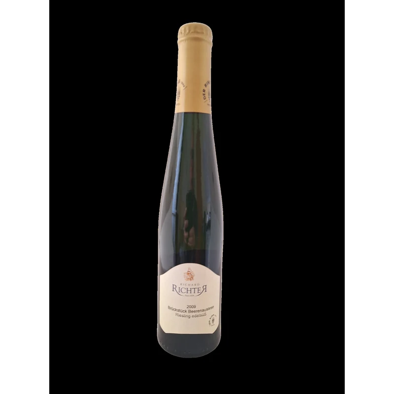
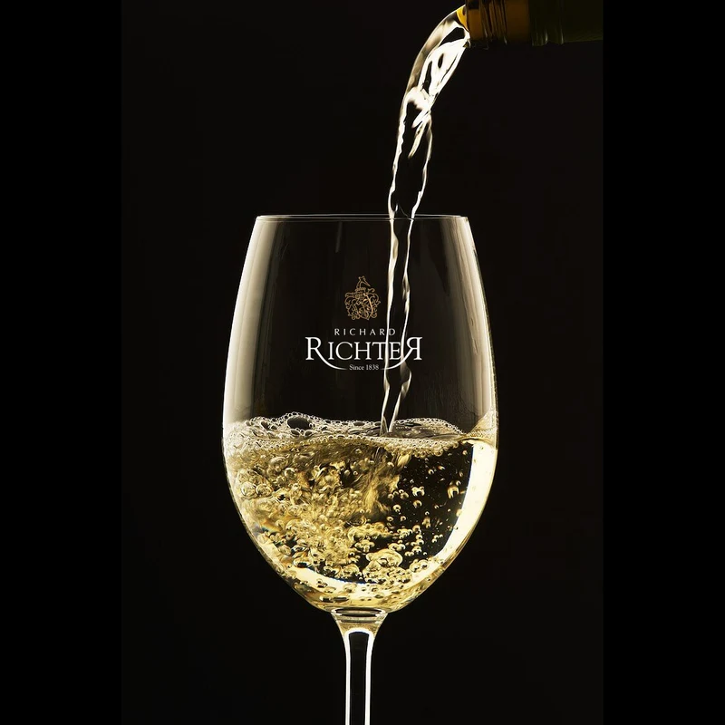

Der Keller
Weinprobe
Weinproben und Verkauf auf Anfrage. Termine und Gruppen werden direkt mit dem Weingut abgestimmt. Die Weine gibt es auch in der Vinothek im Cusanusstift in Bernkastel-Kues.
Ort


Die Weine gibt es auch in der Vinothek im Cusanusstift in Bernkastel-Kues.
Die Details zu Proben, Preisen und Terminen werden noch ergänzt. Diese Seite ist als Vorlage nach dem Muster des Weinguts Kröber aufgebaut.